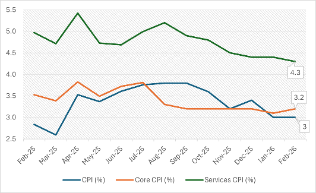
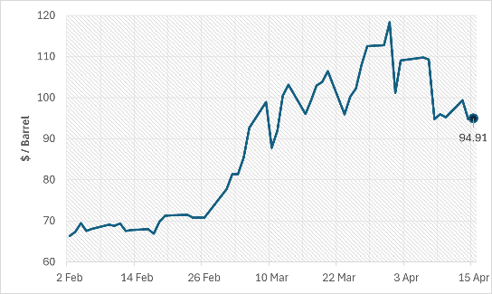
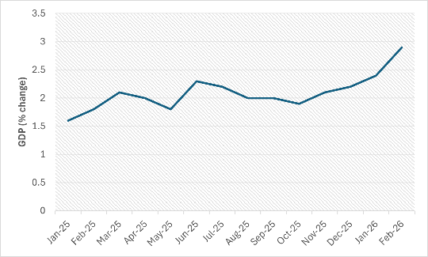
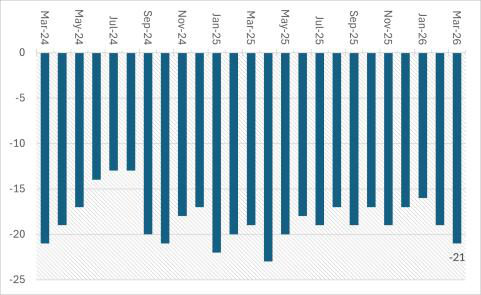

1 Summary
We recommend that the MPC holds the Bank Rate at 3.75%.
2 Current Context
The UK economy is currently in quite an awkward position going into the next MPC meeting, with fairly high interest rates and a Bank Rate of 3.75%, but inflation still being above the 2% target at 3.0%. However, the economy also looks fairly weak: GDP growth has been low, and unemployment has risen up to 5.2%, which suggests demand might be slowing. This means the MPC cannot make an easy decision on rates, as cutting too soon could risk inflation staying high (especially since energy prices keep rising), yet raising them further puts even more pressure on growth and general households. So overall, the current context is uncertainty, weak growth and slow inflation changes.
3 Inflation & External Pressures
Inflation is obviously a major concern for the MPC as it is still above the Bank of England’s 2% target with the CPI inflation at 3.0% in February 2026, unchanged from January. More importantly, some of the underlying measures are also not showing signs of improvement as Core CPI (excludes food, energy, alcohol and tobacco) rose by 0.1% and services inflation only fell slightly from 4.4% to 4.3%. This suggests the higher inflation is not just being caused by the short-term volatile prices but is also sticking around in the economy. On its own, this gives the MPC a reason to be cautious about cutting the interest rates too quick.

However, the bigger issue is that the latest CPI number may not fully show the full inflation risk the MPC is actually facing. In February, fuel prices were actually helping to push down inflation, and the ONS states that its price collection happened before Trump’s new war on Iran on 28th February. Since then, oil prices have skyrocketed, and crude oil is around $94.93 a barrel at the time of writing, and that’s after falling back from earlier peaks. The Bank of England said in its March meeting that higher fuel prices had made the short-term outlook far more uncertain, and it now expects inflation to be close to 3.5% instead of the 2.1% it had projected in February. Expectations also remain above target, expecting inflation of 3.2% the coming year and 3.7% in five years’ time. The GBP has recovered, which may slightly reduce imported inflation, but the pound is still vulnerable because of the UK’s exposure to higher energy costs. Overall, this means inflation is not only still above the target but also at a high risk of rising again because of external factors.

4 Aggregate Demand
While the UK economy is still expanding, seeing as Real GDP grew by 0.2% in three months to January 2026, AD is still relatively weak. This is primarily down to consumption as retail sales were down 0.4% in February, consumer confidence is declining (GfK’s index falling to -21, its lowest level in 11 months), and Barclays reported a spending growth of only 0.9%, noting households were ‘delaying major purchases because of economic uncertainty’. Therefore, this suggests that higher interest rates are still causing an issue as a result of a raise to borrowing costs and reduced disposable income, in addition to the existing uncertainty regarding energy prices.

Furthermore, from an investment perspective, UK business investment fell by 2.5% in Q4 of 2025, hurting future growth and current demand, and firms expect to reduce capital spending and hiring because of low confidence. This is further reflected in the labour market as unemployment has also risen to 5.2% for the last 3 months, the highest since the pandemic, and employees are down 109,000 on the year. The housing market doesn’t look strong either, Nationwide said, the annual house prices grew 2.2% in March, but the Bank of England reported that demand of lending for buying houses was unchanged in Q1. Together, these indicators show a weakening in demand-side inflationary pressure, even though inflation remains a problem due to the unstable international situation.

5 Recommendations
So after looking at both the inflation data and the state of demand, we think the MPC should keep the Bank Rate unchanged at 3.75% at its next meeting. Inflation is still above the 2% target, with CPI at 3.0% in February, and there is a serious risk of another push up in inflation due to recent oil and gas price hikes. The Bank of England saying last month that the Iran war had increased uncertainty and worsened the inflation outlook means that cutting interest rates now would be too risky and could allow inflation expectations to stay above 2% for longer.
However, we do not think there is a strong enough case for a rate rise either, as, although GDP grew by 0.5% in February, the economy is still weak – unemployment at 5.2%, business investment falling, low confidence, etc. This therefore suggests that interest rates are having a negative effect on demand, so raising rates further could weaken growth too much, especially when a lot of the inflation risk is actually coming from the external energy price increases. So a rate rise would not do much to solve the problem but would still make the economy weaker.
So overall, our recommendation is that the best approach is to hold at 3.75% for now and wait to see whether the shock in energy prices causes any more permanent inflation. If that does happen, the MPC might need to keep the Bank Rate higher for longer, but for now, holding is the best option.
5.1 Risks and Different Views
Some might disagree by looking at the data and noticing that the above target inflation, a sharp rise in energy prices and a growing GDP in February signal that the economy is actually doing better than expected and therefore raise rates, as to prevent expectations of higher inflation. Alternatively, some may view the rise in unemployment as the economy slowing, and high interest rates could make this worse. However, in this uncertain time, we still think holding is the best option as it stops any overreactions either way.
6 References
Bank of England – Monetary Policy Summary and Minutes (March 2026), Monetary Policy Report (February 2026), Bank Rate data, Inflation Attitudes Survey
Office for National Statistics (ONS) – CPI Inflation (Feb 2026), Labour Market (March 2026), GDP (Feb 2026), Retail Sales (Feb 2026), Business Investment (Q4 2025)
Reuters – Oil prices, exchange rates, and UK economic news (April 2026)
Nationwide – House Price Index (March 2026)
Barclays – Consumer Spending Data (March 2026)
British Chambers of Commerce (BCC) – Business confidence data (March 2026)
GfK – Consumer confidence data (March 2026)